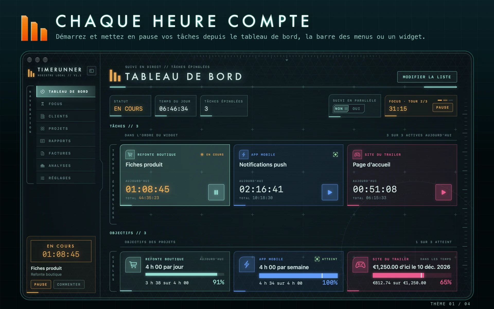
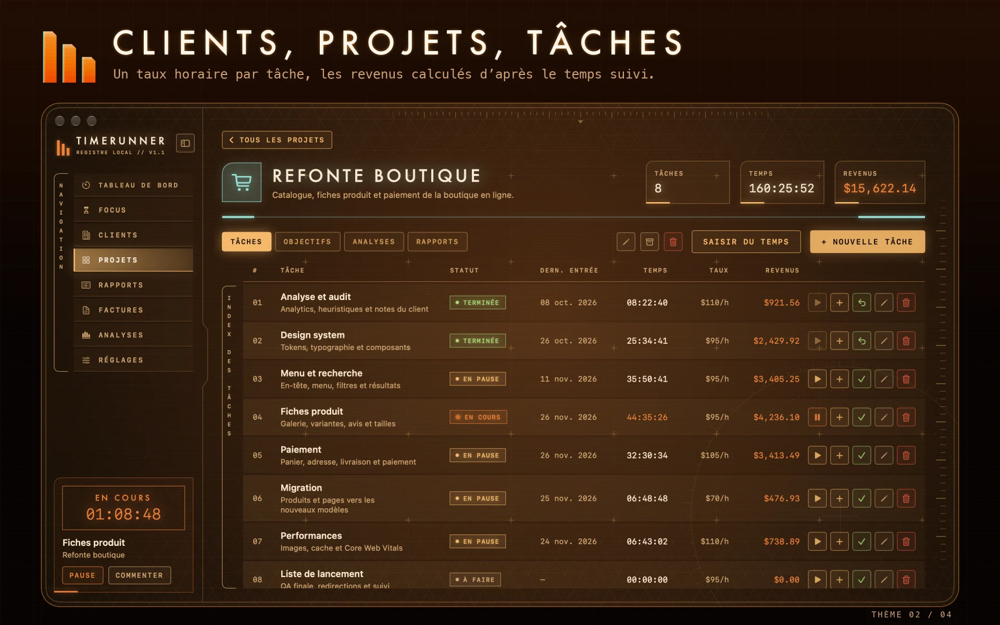
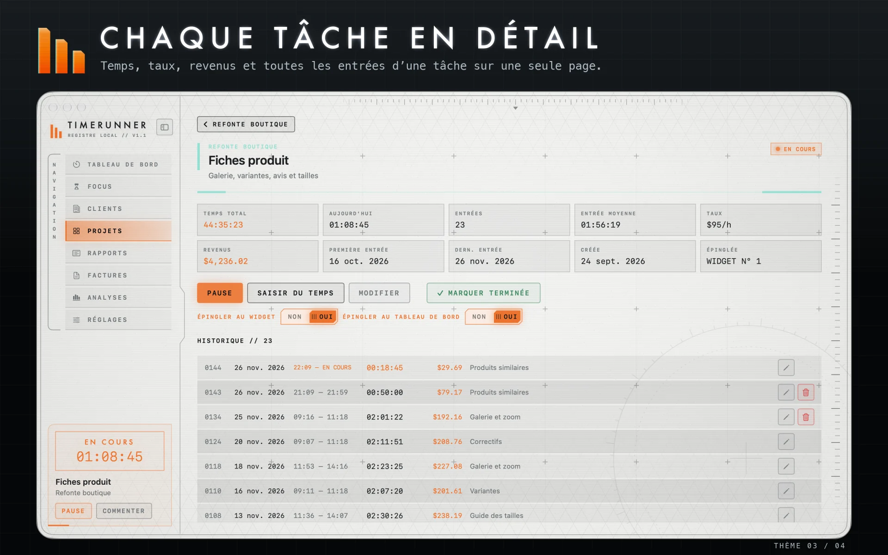
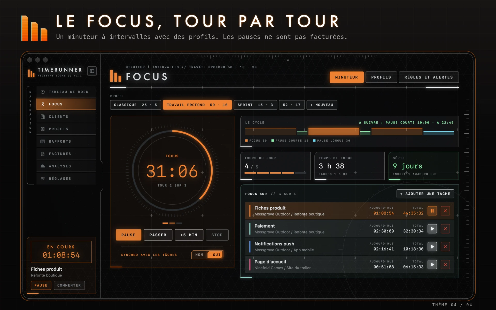
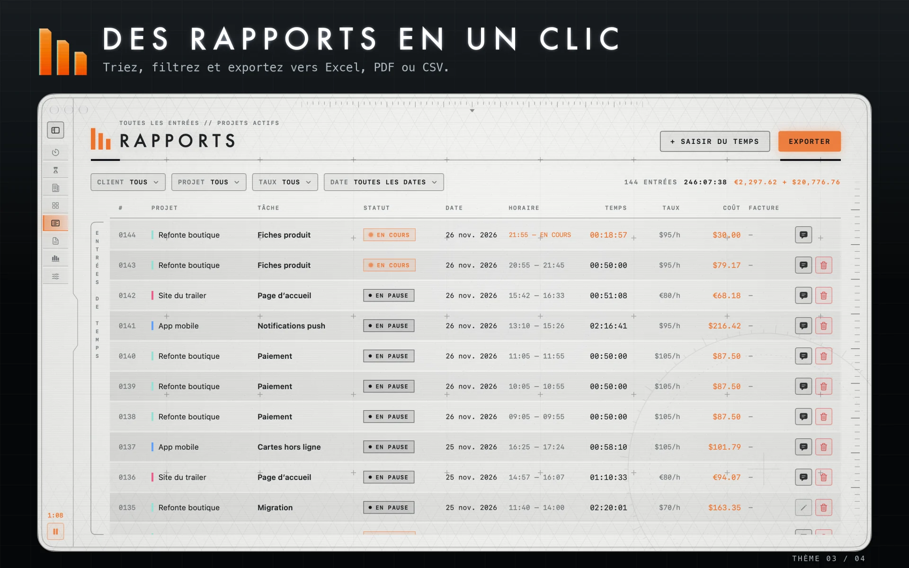
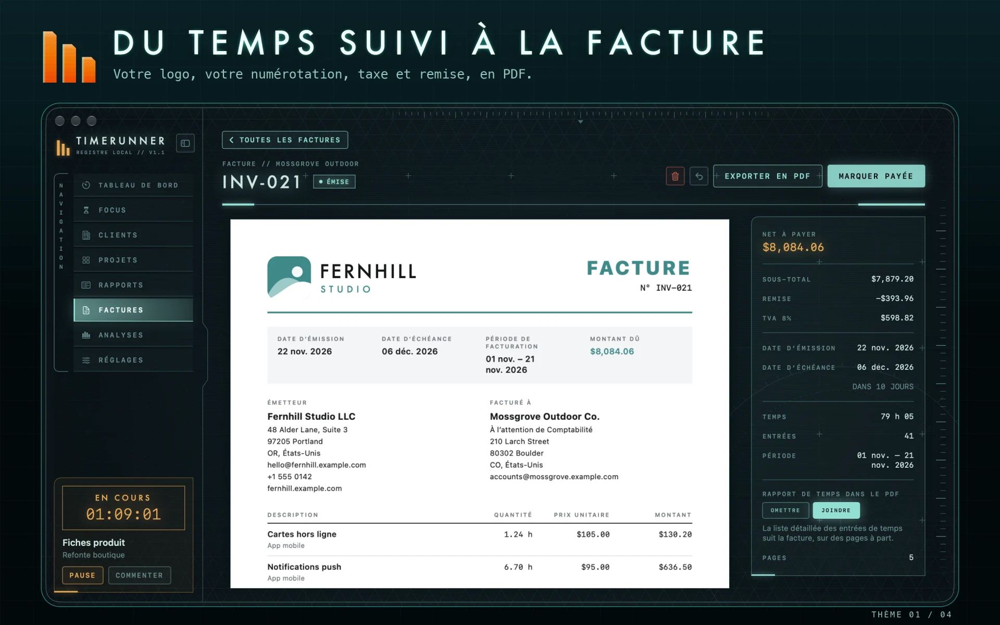
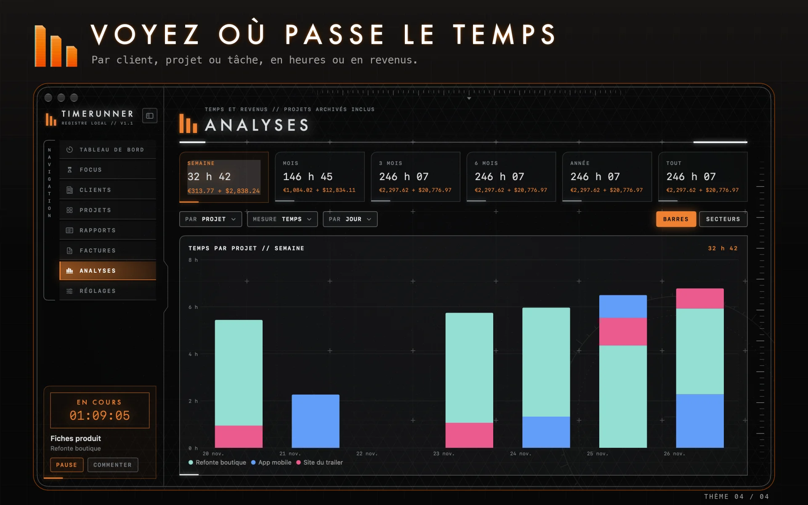
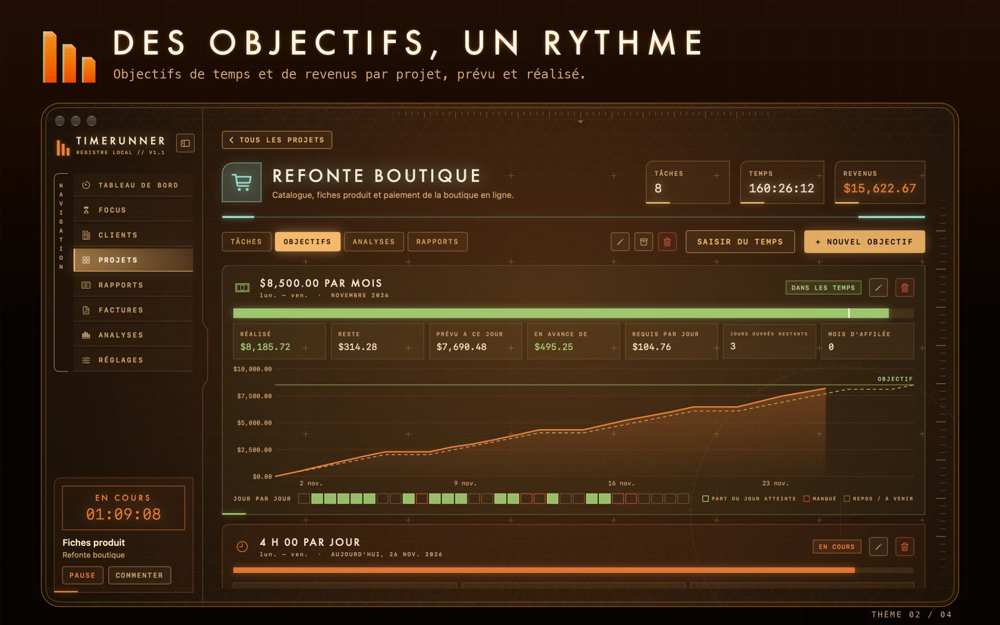
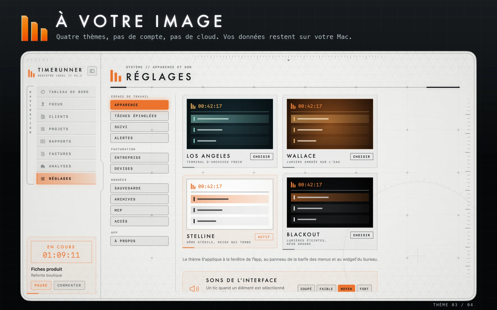
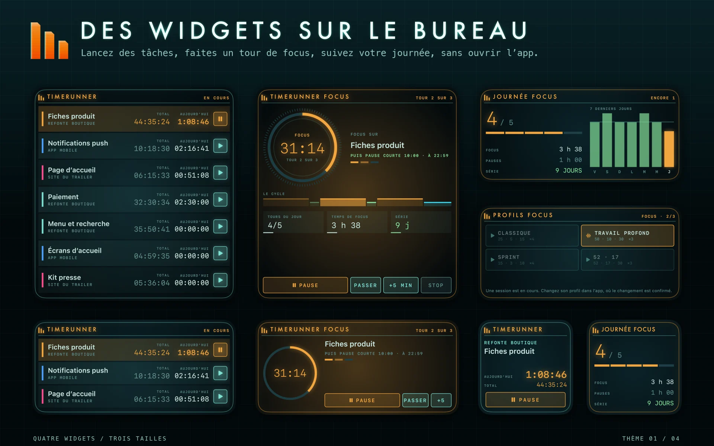

Votre temps, suivi
comme vous le facturez
Suivez le temps facturable depuis la barre des menus, un widget ou l’app. Focus par tours, objectifs, factures PDF. Un mois gratuit. Tout reste sur votre Mac.


- Clients → projets → tâches → entrées de temps, avec un taux et une devise par tâche
- Un seul minuteur à la fois, ou plusieurs en parallèle

- Saisissez le temps que vous avez oublié de suivre, avec un jour, une durée et un commentaire
- Statuts : À faire, En cours, En pause, Terminée

- Un minuteur à intervalles façon Pomodoro : des tours de focus, des pauses courtes, une longue après le dernier
- Profils : 25·5, 50·10, 15·3, 52·17 — et les vôtres
- Il peut lancer le minuteur d’une tâche et le mettre en pause pendant les pauses, pour que le repos ne soit pas facturé
- Sons, notifications, alerte avant la fin, écran de pause
- Une liste de tâches pour le Focus : les sessions ne suivent que les tâches que vous y mettez

- Un tableau triable de toutes les entrées, avec des filtres par client, projet, taux et date
- Export vers un classeur Excel (.xlsx), en PDF ou en CSV

- Des factures PDF à partir du temps non facturé d’un client — tout ou une période, une ligne par tâche, projet ou entrée
- Votre logo, votre couleur, les coordonnées de paiement, la numérotation, la taxe et la remise
- Brouillon → Émise → Payée, le retard étant calculé d’après la date d’échéance
- Le temps d’une facture émise n’est jamais facturé deux fois

- Totaux de la semaine, du mois, du trimestre, de l’année ou de toute la période — par client, projet ou tâche, en heures ou en revenus

- Des objectifs de temps ou d’argent par projet : par jour, par semaine ou par mois, ou pour une date
- Progression, rythme, un graphique prévu / réalisé et une marque pour chaque jour

- Quatre thèmes, du néon turquoise au noir sobre
- Les sections que vous n’utilisez pas peuvent être masquées
- La fenêtre se réduit dans un coin de l’écran et reste utile
- En neuf langues : anglais, espagnol, français, allemand, italien, polonais, biélorusse, japonais et coréen

- Un clic pour démarrer ou mettre en pause — dans l’app, dans la barre des menus, sur le bureau
- Trois widgets : le minuteur, votre journée, vos profils
- Épinglez une tâche au tableau de bord et au widget du bureau séparément
- Pas de compte, pas d’analyse, pas de publicité — rien de ce que vous saisissez ne quitte votre Mac
- Sauvegardes quotidiennes automatiques sur votre Mac et dans un dossier de votre choix
- Verrouillage facultatif par Touch ID
- Toutes les devises nationales et les dix plus grandes cryptomonnaies
- Un connecteur MCP intégré permet aux assistants IA de votre Mac de lire vos projets et votre temps et d’ajouter de nouvelles entrées — seulement si vous l’activez, et jamais de modifier ni de supprimer
UN MOIS GRATUIT, PUIS À VOUS DE CHOISIR
TimeRunner se télécharge gratuitement, et tout est gratuit le premier mois. Ensuite :
Paiement chaque mois
Paiement chaque année, ou en 12 mensualités là où l’App Store les propose
Un seul paiement, rien à renouveler
Sans formule, TimeRunner passe en lecture seule : vos entrées restent sur votre Mac et peuvent toujours être ouvertes, exportées et sauvegardées.
L’abonnement est facturé sur votre compte Apple et se renouvelle automatiquement pour la même durée et au même prix, sauf s’il est annulé au moins 24 heures avant la fin de la période. Vous pouvez le gérer ou l’annuler dans les réglages de votre compte App Store.
Prix aux États-Unis. Dans les autres pays, l’App Store affiche les siens.